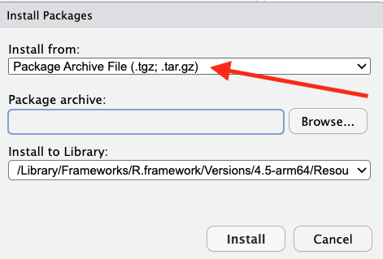

#####################################################################
########## Lab Practice 2: ARMA models ###########
#####################################################################2025_09_10 Stochastic Processes, ARMA Processes, lecture notes
Load the required libraries
MLTools setup
MLTools is a library of R functions developed here at ICAI. To install it you need to download the compressed code file from this link to Moodle:
Then in RStudio use the Packages tab in the bottom right panel, click the Install button and then, in the window that opens, make sure to select Package Archive File as indicated below:

Navigate to the folder where you downloaded the MLTools file, select that file with Open, and then click Install.
After that you can proceed to load the remaining libraries. You may also need to install lmtest (using CRAN this time).
library(MLTools)
library(fpp2)
library(tidyverse)
library(readxl)
library(lmtest) #contains coeftest functionSet working directory
setwd(dirname(rstudioapi::getActiveDocumentContext()$path))White Noise
We will create a gaussian white noise time series. In order to do that we get a sample of n random values from a standard normal.
n <- 150
z <- rnorm(n, mean = 0, sd = 1) 0 and 1 are the default values for rnorm so this is equivalent to `rnorm(n)``
head(z, 30) [1] 0.56826778 1.02006770 -0.61295471 -0.31379532 -0.01459139 -0.57916716
[7] -0.42448195 0.08866430 -0.35728631 0.97686752 0.16929514 1.88299787
[13] 0.79931063 -0.37434837 -0.68498734 0.68298560 0.99611537 -0.48007449
[19] -0.46755036 -0.12304528 -1.55003009 -0.27419408 -0.58253239 0.71268358
[25] 0.83054202 0.74542630 0.06376583 -3.41446325 1.60521222 -0.06287682Now we use this to define a ts object. Note that now we are not providing the frequency, start, etc. In this case, the ts function will create a time index using the natural numbers t = 1, 2, 3, …
w <- ts(z)
head(w, 25)Time Series:
Start = 1
End = 25
Frequency = 1
[1] 0.56826778 1.02006770 -0.61295471 -0.31379532 -0.01459139 -0.57916716
[7] -0.42448195 0.08866430 -0.35728631 0.97686752 0.16929514 1.88299787
[13] 0.79931063 -0.37434837 -0.68498734 0.68298560 0.99611537 -0.48007449
[19] -0.46755036 -0.12304528 -1.55003009 -0.27419408 -0.58253239 0.71268358
[25] 0.83054202Time plot of the white noise time series:
autoplot(w) +
ggtitle("White noise") +
geom_point(aes(x = 1:n, y = z), size=1.5, col="blue")ACF and PACF of white noise
ggtsdisplay(w, lag.max = 20)
Random walks
A random walk is an stochastic process usually defined by the recursive equation: \[y_t = k + y_{t-1} + w_t\] where \(w_t\) is white noise. The value \(k\) is the drift constant. If we set \(y_0 = 0\) an equivalent definition of random walk is: \[y_t = k\cdot t + w_1 + w_2 + ... + w_t\]
Let us use this to simulate n values of a random walk with drift:
n = 1000
set.seed(2024)
# Let k be the drift constant
k = 0.1
# Create the white noise time series values:
w = 10 * rnorm(n)
# and then
rw_ts = ts(k * (1:n) + cumsum(w))This is the time plot, note that it does not look like noise any more!
autoplot(rw_ts) +
ggtitle("Random walk with drift") ACF and PACF of random walk
ggtsdisplay(rw_ts, lag.max = 50)The presence of the linear trend translates into a slow decay in the ACF
ACF for a seasonal series
For a seasonal series the ACF function also displays patterns related to the seasonal period:
autoplot(AirPassengers)
sp = 12
# ACF and PACF
ggtsdisplay(AirPassengers)
To examine the individual ACF values we can use:
Acf(AirPassengers,lag.max = 2 * sp, plot = FALSE)
Autocorrelations of series 'AirPassengers', by lag
0 1 2 3 4 5 6 7 8 9 10 11 12
1.000 0.948 0.876 0.807 0.753 0.714 0.682 0.663 0.656 0.671 0.703 0.743 0.760
13 14 15 16 17 18 19 20 21 22 23 24
0.713 0.646 0.586 0.538 0.500 0.469 0.450 0.442 0.457 0.482 0.517 0.532 And to visualize the correlation between lagged versions of the time series we can use a lag plot:
gglagplot(AirPassengers, seasonal = FALSE, do.lines = FALSE, colour = FALSE)We can also examine a time plot of the series and its lagged version to understand what is happening:
k <- 7
lagged <- stats::lag(AirPassengers, k)
AirPassengers_lag <- cbind(Original = AirPassengers, lagged = lagged)
head(AirPassengers_lag, k + 2) Original lagged
Jun 1948 NA 112
Jul 1948 NA 118
Aug 1948 NA 132
Sep 1948 NA 129
Oct 1948 NA 121
Nov 1948 NA 135
Dec 1948 NA 148
Jan 1949 112 148
Feb 1949 118 136ts.plot(AirPassengers_lag,
lty = 1:2,
main = "AirPassengers and lagged Series",
ylab = "Passengers", xlab = "Time")
legend("topleft", legend = c("Original", "lagged"),
lty = 1:2)ARMA processes
Now let us turn to ARMA processes
# Line 14
## Load dataset
fdata <- read_excel("ARMA_series.xls")
#fdata <- read_excel("ARMA_Hackaton_data.xls")# Line 18
# Convert to time series object
fdata_ts <- ts(fdata)
head(fdata_ts)Time Series:
Start = 1
End = 6
Frequency = 1
y1 y2 y3 y4 y5 y6
1 0.00000000 0.0000000 0.00000000 0.000000 0.00000000 0.0000000
2 0.15308507 -0.7165780 -1.71442720 0.000000 1.67224070 -0.4915498
3 -0.40741828 -0.3887689 0.06525109 1.450110 -0.25668180 1.6003533
4 0.03831497 0.3933029 0.50867057 1.845359 -0.09947878 -0.5246700
5 -0.05568611 -1.3998697 -0.23749804 4.164812 -1.09044400 0.3197939
6 0.08986429 0.8092756 -0.63004594 2.951456 3.49057750 -0.6224836# Line 23
# index to select a time series
y <- fdata_ts[ ,2]# Line 27
## Identification and fitting frocess -------------------------------------------------------------------------------------------------------
# ACF and PACF of the time series -> identify significant lags and order
ggtsdisplay(y, lag.max = 20)# Line 32
# Fit model with estimated order
arima.fit <- Arima(y, order=c(1,0,1), include.mean = TRUE)
summary(arima.fit) # summary of training errors and estimated coefficientsSeries: y
ARIMA(1,0,1) with non-zero mean
Coefficients:
ar1 ma1 mean
-0.0209 -0.7476 -0.0077
s.e. 0.0895 0.0648 0.0146
sigma^2 = 0.8666: log likelihood = -335.76
AIC=679.51 AICc=679.68 BIC=693.6
Training set error measures:
ME RMSE MAE MPE MAPE MASE ACF1
Training set -0.006359145 0.9253249 0.7463957 Inf Inf 0.4566577 -0.001999382# Line 37
coeftest(arima.fit) # statistical significance of estimated coefficients
z test of coefficients:
Estimate Std. Error z value Pr(>|z|)
ar1 -0.0209400 0.0894843 -0.2340 0.8150
ma1 -0.7475557 0.0647692 -11.5418 <2e-16 ***
intercept -0.0076721 0.0146470 -0.5238 0.6004
---
Signif. codes: 0 '***' 0.001 '**' 0.01 '*' 0.05 '.' 0.1 ' ' 1# Line 39
autoplot(arima.fit) # root plot# Line 41
# Check residuals
CheckResiduals.ICAI(arima.fit, bins = 100, lags = 20)
Ljung-Box test
data: Residuals from ARIMA(1,0,1) with non-zero mean
Q* = 11.895, df = 7, p-value = 0.1041
Model df: 3. Total lags used: 10# Line 44
# If residuals are not white noise, change order of ARMA
ggtsdisplay(residuals(arima.fit), lag.max = 20)# Line 49
# Check fitted forecast
autoplot(y, series = "Real") +
forecast::autolayer(arima.fit$fitted, series = "Fitted")# Line 53
## Simulate ARMA time series -------------------------------------------------------------------------------------------------------
sim_ts <- arima.sim(n = 250,
list(ar = c(0.8897, -0.4858), ma = c(-0.2279, 0.2488)),
sd = sqrt(0.1796))# Line 53
#Perform future forecast
y_est <- forecast::forecast(arima.fit, h=5)
autoplot(y_est)References
Hyndman, R. J., & Athanasopoulos, G. (2021). Forecasting: Principles and practice. OTexts. Retrieved from https://otexts.com/fpp3/
Krispin, R. (2019). Hands-on time series analysis with r: Perform time series analysis and forecasting using r. Packt Publishing Ltd. Retrieved from https://github.com/PacktPublishing/Hands-On-Time-Series-Analysis-with-R